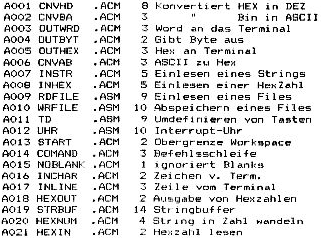
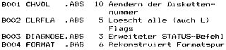
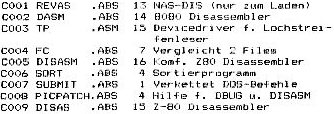
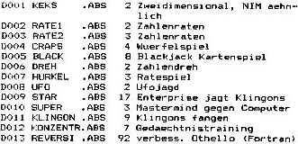
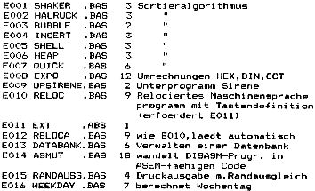
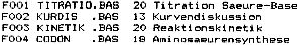
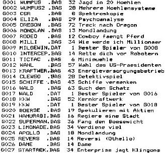

Nascom Journal |
Februar 1982 · Ausgabe 2 |
Beteiligung an der Tauschaktion:
Bitte eine (moeglichst mit vielen Programmen bespielte ) Diskette einsenden und 5,–DM (Schein oder Briefmarken) fuer Verpackung, Port usw. beilegen.
Wolfgang Mayer-Guerr
_______________
____ Recklinghausen
Tel. ___________
Der Einsender eines Programms muss nicht immer auch der Urheber sein!
Stand: 10-FEB-82
Nr. Filename Sektoren Kurzbeschreibung
Hilfsprogramme fuer Maschinensprache

Programme zur Diskettenverwaltung

Hilfsprogramme in Maschinensprache

Spiele in Maschinensprache

Hilfsprogramme fuer Microsoftbbasic

Mathematik/Naturwissenschaft CLD-BASIC

Spiele in CLD-BASIC

| Seite 20 von 32 |
|---|